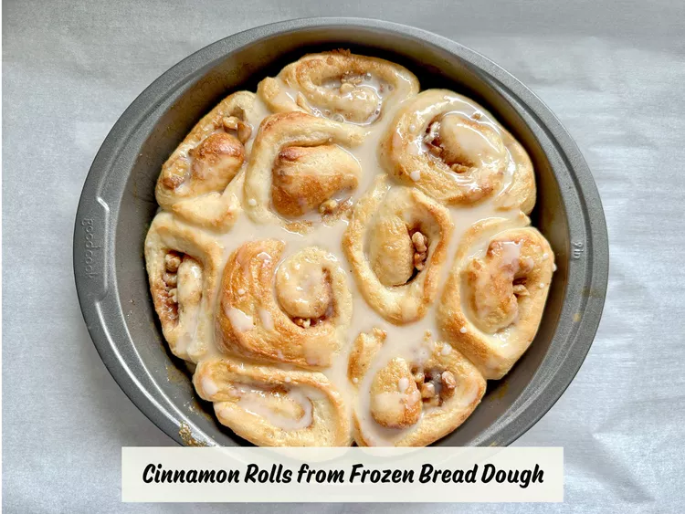

Cinnamon Rolls

Description
This frozen bread dough recipe makes it super easy to make cinnamon rolls. They're super tasty without all the work.
Ingredients
- Butter
- Frozen bread
- Brown sugar
- Chopped walnuts
- Ground cinnamon
- Heavy whipping cream
- Confectioners' sugar
- Milk
- Vanilla
Steps
- Lightly grease two 9-inch round cake pans with 1 tablespoon melted butter; set aside.
- Roll bread dough out to an 18x6-inch rectangle and brush with remaining tablespoon melted butter. Mix brown sugar, walnuts, and cinnamon in a bowl; sprinkle over dough. Roll dough into a log, starting at a long edge. Moisten the other long edge with a little water; press to seal.
- Cut log into 20 slices. Arrange rolls, cut-sides down, in the prepared cake pans. Cover with a towel and let rise in a warm place until doubled in size, about 1 1/2 hours.
- Preheat the oven to 350 degrees F (175 degrees C).
- Pour heavy cream over rolls.
- Bake in the preheated oven until golden brown, about 25 minutes.
- Make icing: stir confectioners' sugar, milk, and vanilla in a bowl until smooth and pourable. Add more milk or sugar as needed to reach desired consistency.
- Drizzle icing over warm cinnamon rolls.